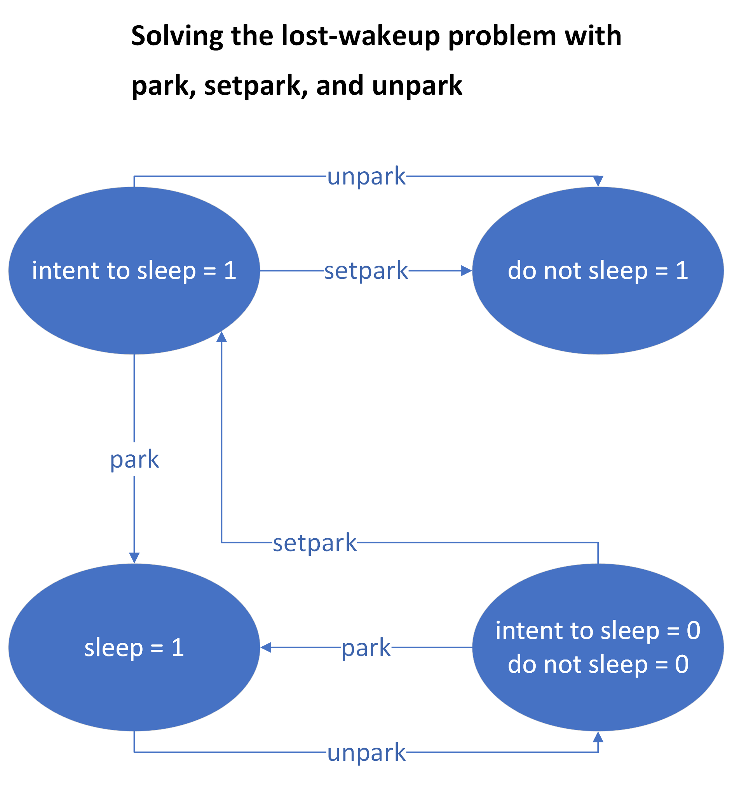

Design of Operating Systems
Operating system design labs by Eric Weng.
Course Introduction
This course covers fundamental concepts in operating system design, including memory management, process management, and file management.
Memory Management
Modify the xv6 virtual memory management to make memory management more efficient includes:
- Copy-on-write forking - This approach minimizes the unused and unneeded memory by delaying the copying of resources until they are actually modified.
- Lazy zero-page allocation - This method also helps in reducing the unnecessary usage of memory by allocating memory pages only when they are actually needed.
Process Management
Add threading support to xv6 using clone function where a new process is created and added to a "thread group." In a thread group, processes(threads) share the same memory space and thus need synchronization support. Concurrency control library, such as mutexes and ocnditional variables, is created to coordinate the work of threads and handles issues like data race, lost-wakeup problem, and deadlocks. This lab contains the following implementations:
- A system call clone() to create a new thread
- Threads have:
- Shared:
- address space (pgdir)
- file descriptor table (ofile array)
- Opening, closing files
- Current working directory (cwd)
- chdir() syscall
- Separate:
- Stack (kernel & user)
- Registers
- Processes have:
- Separate everything (but a lot of it is copied over via fork)
- A system call waitpid() to wait on a specific process ID
- Userspace functions `thread_create()` and `thread_wait()` to allow users to create and wait on threads.
- System calls park(), setpark(), and unpark() to address lost wakeup problem. 
- Userspace functions mutex_init(), mutex_acquire(), mutex_release(), cond_init(), cond_wait(), and cond_signal() to synchronize threading work using the previously defined system calls.
Background: Process vs. Thread
File Management
Provide user isolation and file permission functionalities to xv6. It includes:
- A user system where each process is created with a logical user identifer
- A file permission system where each file's access is controlled by its owner and permission properties.
- A login system where a secure mechanism is implemented for storing and retrieving passwords in xv6.
- Create sudo() function to temporarily allow a user to execute programs as root.